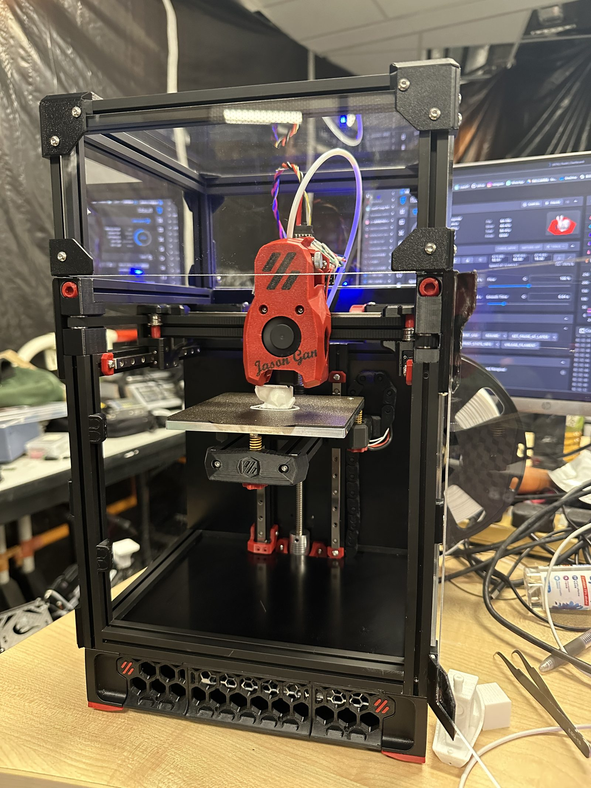
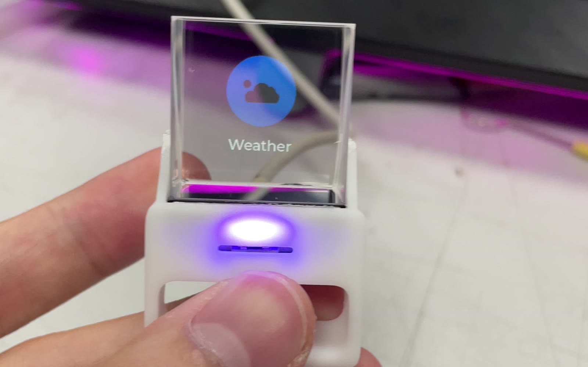

2025

Circle Leg
ELEC-3300 Course Project
A wheel-legged robot that balances and drives on two hub-motor wheel-legs — custom control electronics, LED rings, and an on-board status display.
Every project below is an unforgettable memory — of joy, of learning, and of friendship. Most of them would not have been possible without the help of my good friends, from whom I have learned so much along the way. I am always grateful to them.
ELEC-3300 Course Project
A wheel-legged robot that balances and drives on two hub-motor wheel-legs — custom control electronics, LED rings, and an on-board status display.

HKUST RoboMaster Team ENTERPRIZE · Team Leader
The wheel-legged infantry robot I led the development of throughout the 2025 season — top infantry of the national championship with the highest average damage per match (1375.1 pts); University League Zhejiang regional champion.

HKUST RoboMaster Team ENTERPRIZE · Embedded Engineer
The 2024-season engineer robot — my first season with ENTERPRIZE, working on firmware and control electronics.

Personal Project
A Voron 0.2 FDM 3D printer I assembled and tuned. It now prints most of the brackets and prototypes for my other projects.

Personal Project
Building and flying FPV quadcopters — a ducted cinewhoop, a freestyle quad, and a toothpick.

Personal Project
A reproduction of Zhi Hui Jun's open-source pseudo-holographic desktop display — a beam-splitter prism makes the image float inside the glass.